Hyundai Telecom — Doorphone GUI
Hyundaitel 안면인식 도어폰
버튼을 누르는 대신 얼굴을 비추면 열리는 문. 현대통신 안면인식 도어폰의 얼굴 등록·인증 플로우와 상태 화면, 현관 앞에서 건네는 메시지 아이콘까지 도어폰 GUI 전체를 설계했습니다.
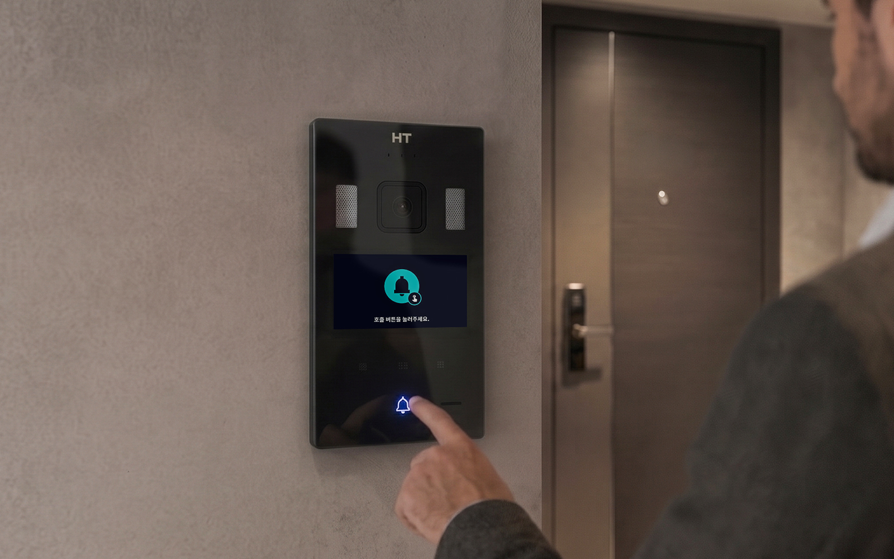
01 — Overview
현관 앞의 사용자는 화면을 오래 보지 않습니다. 그래서 모든 화면이 한눈에 지금 무엇을 해야 하는지 말하도록 설계했습니다.
Background
안면인식 도어폰은 현대통신만의 IoT 기술을 적용해 아파트의 가치와 입주자 만족도를 높이기 위해 개발된 제품입니다. 현대건설과 포스코 아파트에 들어가는 만큼, 각 브랜드의 아이덴티티가 작은 도어폰 화면에서도 살아 있어야 했습니다.
My Part
방문자 감지부터 출입·방범까지의 서비스 플로우를 정리하고, 얼굴 등록·인증 과정의 16개 상태 화면과 안내·출입·기타 3개 카테고리 33개 메시지 화면의 GUI와 아이콘 일러스트레이션을 디자인했습니다.
02 — Challenge
터치에서 안면인식으로
스마트홈 애플리케이션 GUI는 늘 사용자의 터치에 반응하는 방식이었습니다. 안면인식 도어폰에서는 사용자가 기기를 만지지 않습니다. 화면이 먼저 사람을 찾고, 상태를 알리고, 다음 행동을 안내해야 했습니다.
-
01
Touchless
얼굴을 비추는 것만으로 작동하도록, 사용자의 행동을 화면 안내 한 줄로 이끕니다.
-
02
State Clarity
인식 영역·촬영·처리·완료를 색과 형태로 구분해 글을 읽지 않아도 상태가 보이게 했습니다.
-
03
Brand Identity
현대건설과 포스코 아파트의 브랜드 컬러를 지키면서, 메시지 내용이 먼저 읽히는 일러스트를 그렸습니다.
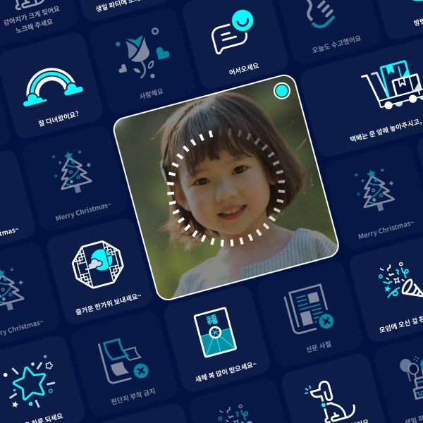
03 — Flow
방문자 감지에서
출입까지.
도어폰이 사람을 감지한 순간부터 흐름이 시작됩니다. 집주인이 안내 메시지를 설정해 두었다면 2초간 먼저 보여 주고, 얼굴 인증에 성공하면 출입 메시지로, 세 번 실패하면 방범 메시지로 넘어갑니다.
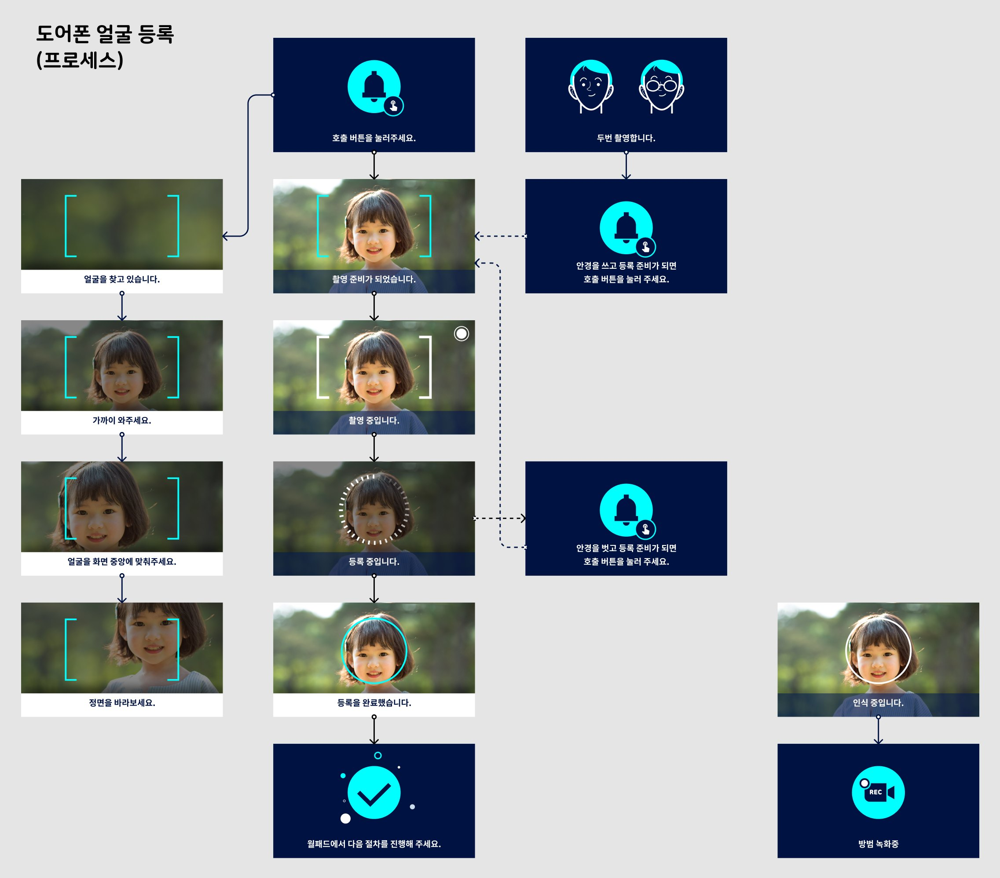
04 — Face Registration
안경 하나로 달라지는
두 갈래의 등록.
안경을 쓰는 사용자는 안경을 쓴 얼굴과 벗은 얼굴을 모두 등록해야 인식률이 안정됩니다. 같은 촬영 루프를 두 번 반복하되, 시작 전에 ‘두 번 촬영합니다’를 먼저 알려 과정이 길어져도 길을 잃지 않게 했습니다.
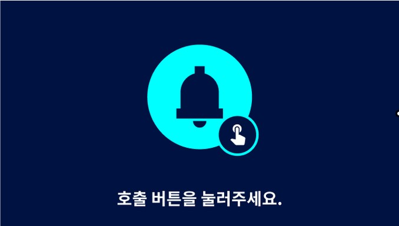
01 / 0605 — State Language
글보다 먼저 읽히는
색과 형태.
도어폰 앞에서는 한 줄의 문구도 다 읽히지 않을 때가 많습니다. 그래서 프레임의 모양과 색만으로 단계를 구분하는 규칙을 먼저 정하고, 모든 등록·인증 화면에 똑같이 적용했습니다.
-
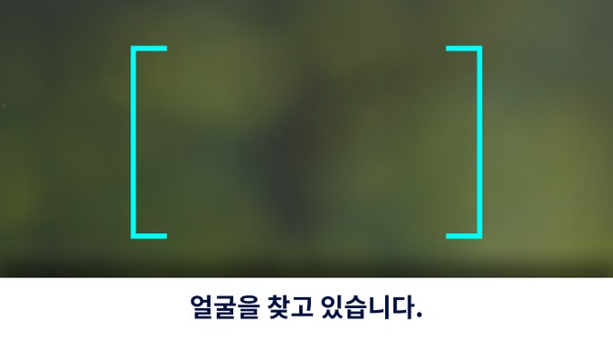
Searching청록 브래킷
인식 영역을 표시하고 얼굴을 기다리는 상태
-
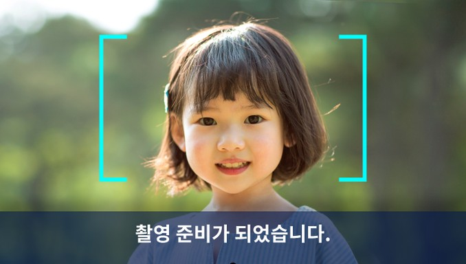
Ready얼굴이 영역 안에
같은 브래킷 안에 얼굴이 들어오면 촬영 준비 완료
-
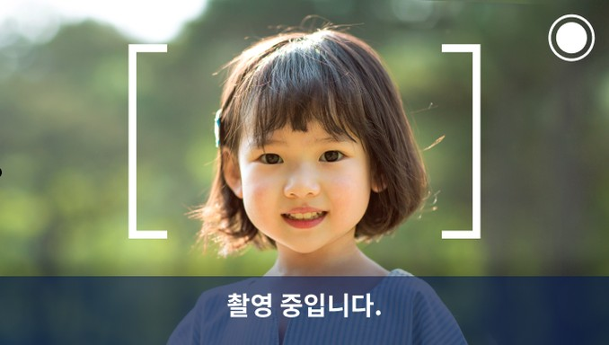
Capturing흰색 브래킷 + REC
색이 흰색으로 바뀌고 녹화 표시가 켜지며 촬영 중임을 알림
-
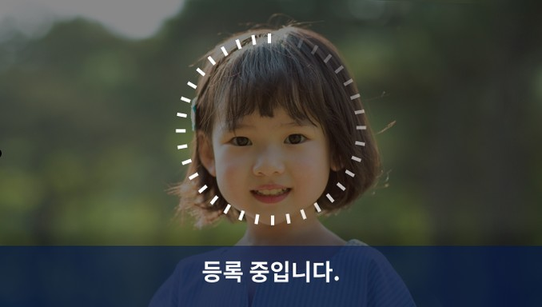
Processing점선 링
브래킷이 원형으로 바뀌고 점선이 돌며 처리 중임을 표시
-
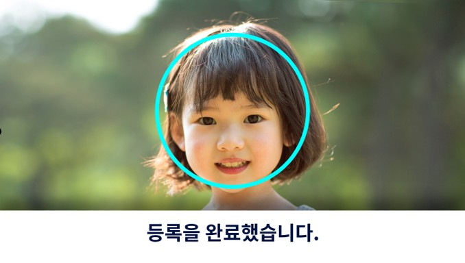
Done청록 실선 링
점선이 닫힌 실선이 되며 결과 확정, 하단 바도 흰색으로 반전
-
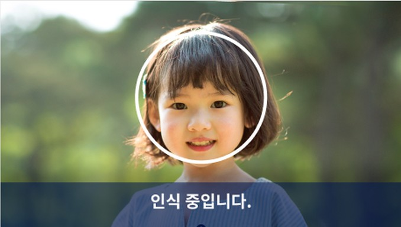
Recognizing흰색 실선 링
등록된 얼굴을 대조하는 인증 단계, 등록과 구분되는 흰색
User Guide
인식에 실패하는 이유는 대부분 거리와 각도입니다. 막연한 ‘다시 시도해 주세요’ 대신, 얼굴과 브래킷의 관계를 보여 주며 무엇을 고치면 되는지 한 문장으로 안내합니다.
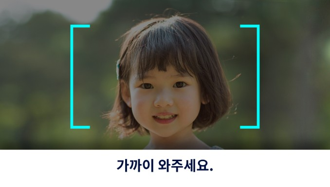
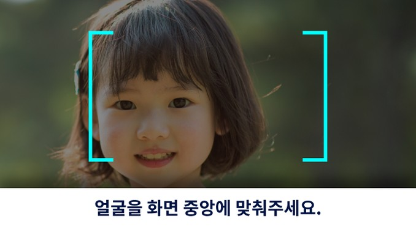
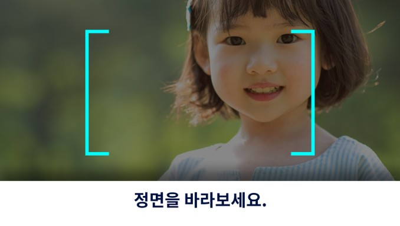
06 — Message System
문 앞에서 건네는
한마디.
도어폰 화면은 방문자에게 집주인의 말을 대신 전하기도 합니다. 외출 중 안내, 가족을 맞는 출입 인사, 명절·모임 메시지까지 세 가지 상황으로 나누고, 흰색 라인과 청록 포인트의 두 색 일러스트로 한 세트처럼 보이게 그렸습니다.
집을 비웠거나 방해받고 싶지 않을 때, 초인종 대신 방문자에게 먼저 보여 주는 메시지
07 — Outcome
-
01
Touchless Entry
버튼과 화면 터치 없이 얼굴만으로 출입하는 경험을, 사람을 찾고 안내하고 결과를 알리는 화면 흐름으로 구체화했습니다.
-
02
One Visual Language
브래킷·링·색으로 이루어진 상태 규칙 하나로 등록, 인증, 가이드 화면 전체를 일관되게 묶었습니다.
-
03
Scalable Messages
같은 그리드와 일러스트 문법으로 33개 메시지를 정리해, 새 메시지가 생겨도 같은 방식으로 늘려 갈 수 있게 했습니다.